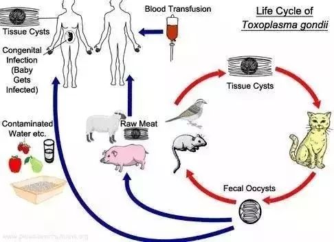
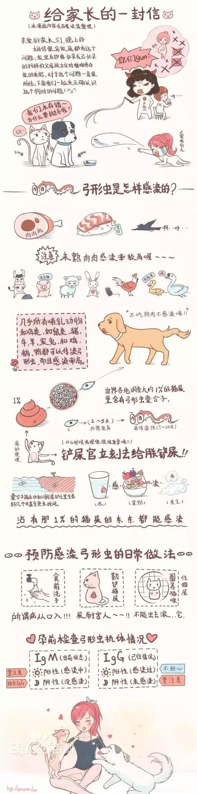

最新动态
Latest News
弓形虫中医叫三尸虫，是细胞内寄生虫。
寄生于细胞内，随血液流动，到达全身各部位，破坏大脑、心脏、眼底，致使人的免疫力下降，患各种疾病。
健康的人在感染了弓形虫后，因人体免疫系统的作用，一般不会表现出明显的症状。
只有10-20%的感染者会出现淋巴结肿大、肌肉疼痛和其他一些轻微症状，持续数周，然后消失（急性弓形虫病）。
但是，弓形虫对患有免疫缺陷疾病（如艾滋病）和使用免疫抑制药物的人群（如接受器官移植者）来说却是致命的！
孕期感染了弓形虫，可能会造成流产。还有可能造成胎儿的神经系统发育不良、脑积水、致盲。
首先，让我们认识一下弓形虫的生活史。

人和人之间也可以互相传染，大多数人都是弓形虫带虫者，形成带虫免疫，被感染后很难出现初次感染的症状。
患弓形虫病人的尿液，唾液、眼泪、鼻涕、带有弓形虫包囊。急性发作的病人的喷嚏，可以成为飞沫传染源。
患有弓形虫病的妇女，在月经期弓形虫活动最强烈，妇女所排的经血里面常含有大量的弓形虫包囊，是一个不小的传染源，决不应忽视。另外，患弓形虫病男人的精液中、也带弓形虫包囊，人类通过性行为可以互相传染。
人吃感染动物的肉，是传染的主要原因。
猫（准确的说是猫科动物）是弓形虫（Toxoplasma ）传播的终末宿主，在弓形虫的传播中扮演着重要的角色。
弓形虫会在它们的肠道上皮细胞内完成增殖，最终通过粪便以卵囊（oocysts ）的形式释放到环境中。
狗是弓形虫的中间宿主，狗接触弓形虫后并不能产生对人具有感染力的囊合子，它的粪便和排泄物都没有传染性，所以单纯接触狗不会感染弓形虫病。
如果不食狗肉就不会传染。
猪、牛、马、羊、狗、猫、兔，还有老鼠等动物体内有时也带弓形虫包囊和活体。
可以污染草原、牧场、土壤、水，囊合子抵抗力强，在外界环境--土壤、水和草地的生存时间可以很长，在潮湿土壤里可活数月乃至数年。
这里，可以简单的理解为，只有猫是可以向环境中释放和扩散弓形虫的。(初次感染的猫咪每天可以向环境中排出10万个弓形虫卵，可持续14-21天。)
如何避免感染弓形虫？
人感染弓形虫的途径：
1、输血或器官移植（非常罕见）
2、食用未煮熟的被感染的肉（尤其是猪肉、羊肉和鹿肉）
3、食用/饮用被感染弓形虫的猫排泄的粪便污染的水、食物等，或接触泥土和其它被污染的物体。（如手指触碰了猫砂之后，手指有触碰了嘴巴）
4、母婴传播。被弓形虫感染的孕妇可以传染给胎儿，即便孕妇本身可能并没有表现出被感染的症状。
所以，我们重点防范的应该是“病从口入”！
是不是孕妇就不可以养猫了呢？
孕妇可以养猫，但是，你要正确的认识弓形虫，做到科学养猫、有效预防。
您一定要做到以下几点：
第一，孕妇不要再亲自换猫砂，把任务交给孩子他爸吧。如果必须要自己做，那么请一定戴手套，并且在完成之后用温水和香皂把手洗干净。（其他人换时也要注意戴手套和洗手，如果有消毒液更好）
第二，确保猫砂一天一换。猫咪粪便中的弓形虫卵，在1-5天之内是不具有感染性的，所以及时清理很关键！
第三，换掉的猫砂不要随处扬撒。
第四，给猫咪喂商品化的猫粮或者罐头。不要喂生的或未煮熟的肉。
第五，不要让猫咪出门，要一直让它待在室内，特别要注意的是阳台，开放的阳台很多时候会成为猫咪捕获鸟的完美战场。
第六，避免接触流浪猫，特别是幼猫（幼猫更容易接触垃圾、污染物的，且容易出现首次感染）。怀孕的时候不要养新猫。
第七，当要接触土壤和沙子时（如您有养花或到户外）请一定戴手套，因为他们可能会被感染弓形虫的粪便污染。同样注意用温水和肥皂洗手。
弓形虫的虫卵可在土壤中存活数年之久！
第八，被弓形虫污染的水和土壤可能会污染到一些水果和蔬菜，食用的时候请确保清洗干净或煮熟或去皮。
此外，吃肉一定要充分煮熟（烹饪前几天将肉放在冰箱的冷藏室冷冻几天，对杀灭病原更有帮助）
食用蔬菜和水果前要充分洗净或去皮。
菜板要分开生熟。
及时清洗使用过的餐柜、菜板、厨具、餐具等，并及时洗手。
不要喝未经处理的生水。
怀孕后抗体检查结果:
如果IgM抗体为阳性，多说明近期内有感染，暂时不能怀孕，需要进行治疗，待治愈后方可考虑怀孕。
如果抗体均为阴性，多说明身体还未受到过感染，那么在孕前及孕后更要小心。
如果觉得自己难以保证良好的卫生习惯，为保险起见在怀孕期间还是"暂别"宠物为上策。因为，身体里没有相关抗体。最好在妊娠早、中、晚期分别进行复查。就算把宠物"暂时"送走，只要孩子生下后，还是可以接回来自己养。
如果IgM抗体阴性、IgG抗体阳性，但抗体效价不高，可能为慢性感染或既往有过感染。
如果在怀孕前感染过弓形虫，怀孕后一般不再有被传染的危险。因为，只有在怀孕前没有感染过弓形虫的孕妇，在怀孕期间发生初次(原发性)感染才有可能传染给胎儿。这时，只要注意卫生习惯，宠物可以留在身边。
本文参考：美国CDC

来源：武警后勤学院附属医院检验科
【延伸阅读】
关于宝宝和猫猫-关于弓形虫的困惑
作者：北京协和医院妇产科 张羽
很多孕前检查的年轻人经常会问到一个问题，我们准备生宝宝了，是不是不能再养猫了？如何处理好宝宝和猫猫的关系呢？
随着健康知识的普及，很多人都知道，如果孕期感染了弓形虫，会生出傻孩子或者怪胎。以下是孕妇感染弓形虫可能发生的情况：孕期感染弓形虫，会导致胎儿宫内死亡、自然流产。如果孩子侥幸存活，妊娠得以继续，弓形虫可能侵犯胎儿的中枢神经系统，发生脑积水、小头畸形、脑钙化、肝脾肿大、腹水、胎儿宫内生长受限等等问题。宝宝出生后面临抽搐、脑瘫、视听障碍、智障等，死亡率达72%。
听听，多吓人，要是这么笼统的一看，一旦感染弓形虫，简直是万劫不复，还不赶紧送走猫猫，哪怕再爱，也不能把祸根留在身边了。
弓形虫的病原微生物主要是刚地弓形虫，传染途径主要是摄取被猫科动物的体液或粪便污染过的食物，弓形虫的感染绝大多数都是通过食物摄入，所谓的“虫从口入”。吃生肉或者半生不熟的肉，尤其是现代人喜食生牛肉是城市人群重要的感染途径之一。进行屠宰或者运输工作的工人如果接触生肉或生内脏后，没有清洁双手就进食也很危险。再有就是养猫的家庭，可能通过接触猫猫的粪便致病。
实际上，只有首次感染弓形虫的猫会在感染最初两周内传播虫卵。而且，猫粪中的卵囊要“孵化”一天才具有传染性。如此算来，准妈咪养到一只刚好具有危险性的猫的概率应该是不大的。而且，目前唯一确认的终宿主是猫科动物。狗虽是弓形虫的中间宿主，但是它的粪便和排泄物都没有传染性，单纯和狗接触不会感染弓形虫病。
国外妊娠期弓形虫病发生率约为0．2% ～1% ，我国报道弓形虫感染率为4．9% ～8．4%。弓形虫感染的孕妇一般没有明显的症状，需要了解病史，如养猫、接触其污物，或生食肉类、或厨具不卫生(生、熟不分)等等才能追根溯源。血清学检测弓形虫抗体（TOXO IgG和IgM）有一定参考价值，但不能因为孕妇抽血化验的一个阳性结果，就盲目引产，放弃胎儿。医生会建议可疑患者在妊娠20周后作进一步检查，如羊水穿刺、经皮穿刺取脐带血及B超来综合判断。
妊娠期弓形虫病如积极治疗，可降低先天弓形虫病的发生，同时能减少严重的胎儿损害。早期宫内治疗远比等到孩子出生后再治疗的效果好，能够明显降低中枢神经系统后遗症、智障、视网膜病变的发生率。欧洲主要用螺旋霉素治疗，而WHO与美国则在孕12周后用磺胺嘧啶与乙胺嘧啶治疗。据报道，先天弓形虫感染率可下降70%。
一些欧洲国家规定对孕妇常规进行弓形虫抗体检查，做法是在怀孕早期进行血清抗体检查，如果为阴性（即没有感染过），告诉孕妇注意预防感染，并定期复查；一旦发现孕妇出现急性感染，即给予螺旋霉素治疗，同时对胎儿进行羊膜穿刺和超声检查，如果证明胎儿发生感染，孕妇则采用磺胺加乙胺嘧啶治疗。要是发现胎儿有明显的病症，父母可考虑终止妊娠。但这种方法是否值得采用，仍有争论。由于孕妇在妊娠期间的感染和胎儿感染的机会都很小，鉴于收益和成本的比例，以及可能由此带来的心理问题，英美的研究结论是这种筛检不值得常规做。
是否应该对孕妇进行弓形虫感染的筛检是个严肃的公共卫生问题，需要在大量详实的调研资料的基础上，分析成本和收益，同时还需考虑社会经济学、心理学、伦理学等诸多因素，由国家制定政策。
目前，我国还没有相关方面的立法可循，很多医院对早孕妇女进行TORCH筛查，其实真正宫内感染的发生率不是很高，而且，由于试剂盒本身的质量以及检验方法等等问题，可能存在一定比例的假阳性和假阴性结果，不仅浪费钱财，而且还引起病人和家属的焦虑，带来很大精神负担，甚至可能会造成难以弥补的损失。
我本人更倾向于建议女性在怀孕之前检测弓形虫，如果没有近期感染证据，同时进行预防弓形虫感染的健康宣教，预防方法是：
（1）怀孕的妇女避免与猫的粪便接触，家庭成员应及时做好猫的粪便清洁工作；
（2）避免动物尤其是猫的粪便污染水源，蔬菜等；
（3）不要吃生肉，或者半生不熟的肉；
（4）厨房里要生、熟食品分离，生、熟食分别加工，如用两块菜板，两把刀具等；
（5）饭前便后要养成洗手的习惯。
这样，能够在很大程度上预防真正发生在孕早期的这部分危害性最大的感染。希望国内产科学界能够组织大规模多中心的临床观察实验，得出一个科学的结论，指导临床工作，给大众一个相对明确的指导意见。
目前，许多医院对孕妇普遍进行弓形虫抗体检查。有些医院的检查和处理没有规范，检查归检查，结果无所谓，也不做处理。很多孕妇会怀着一颗忐忑的心，带着全家老小的顾虑和担心，甚至含着泪水，捏着一张检查阳性的化验单来我的门诊进行咨询。阳性怎么办？要不要治疗或终止妊娠？还有的人在这个医院化验阳性，到另一个医院化验又变成阴性了，到底相信哪个？要知道，在美国，如果初级医疗单位发现阳性结果，是不能作为确诊依据的，必须将血清送到国立专门机构进行确证实验。为此，2008年，北京大学第一医院的产科专家董悦教授曾经专门撰文《对围产期TORCH感染筛查的重新评价》，目的是呼吁不要只管化验，更要学会专业科学的看待结果，针对每一个孕妇，都要具体分析孕期感染微生物类型，感染时间，以及具体到每一个孕妇到底会不会发生宫内传播，给予个体化的专业咨询意见，切不可听风就是雨，只要阳性就盲目引产。
在我的门诊进行产前检查的孕妇中，有一些行事谨慎的人家可能会把猫猫送人，或者，暂时寄养在朋友家里，等过了危险期再接回来，我认为这么做是可以接受的，孕育下一代的事情毕竟很重要。如果，你爱猫猫，离开它活不了，实际上留下猫猫也是完全可以的，但是，准妈妈们还是把打扫猫沙猫舍这样的活儿交给家人做吧，不要亲力亲为。若是本人和猫猫相依为命，一定要注意以上所述的预防措施，防止“虫”从口入。
也会偶尔碰到一些“弃宠”的家庭，就是把曾经的猫猫抛弃，使他们成为流浪猫。我只想说，我们人类在打算创造一个未知新生命的同时，不要轻易抛弃另一个已经存在的生命。
2019年09月06日
上一篇：
下一篇：
孕妇vs弓形虫——无需惊慌，也别大意
添加时间: